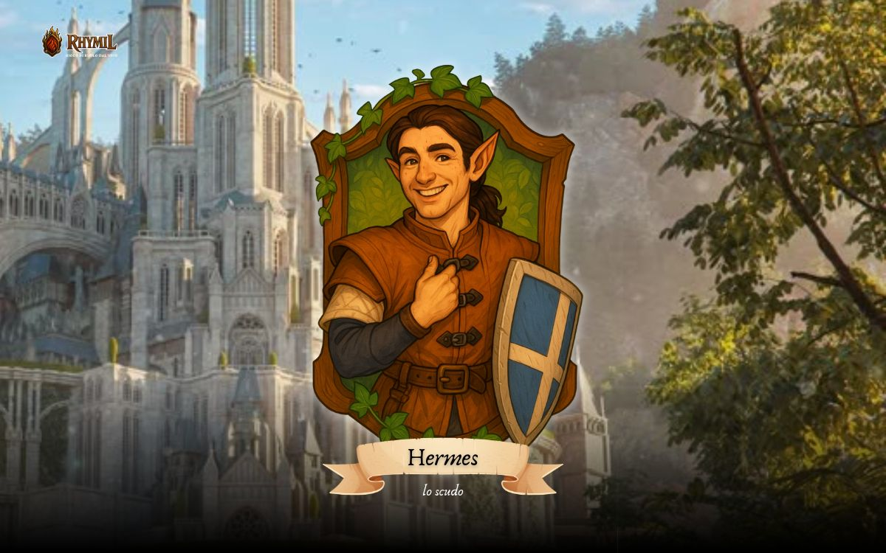
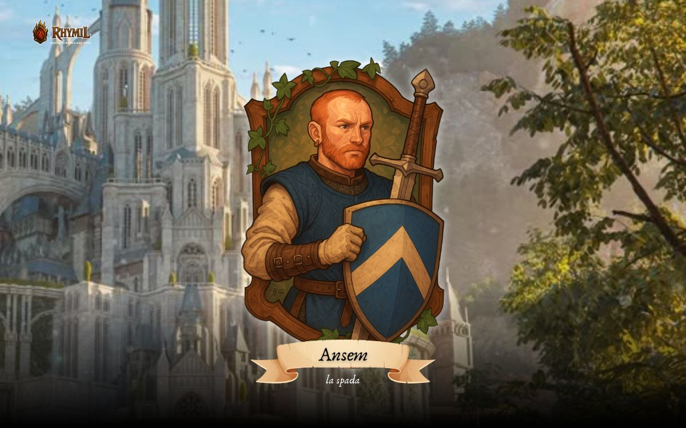
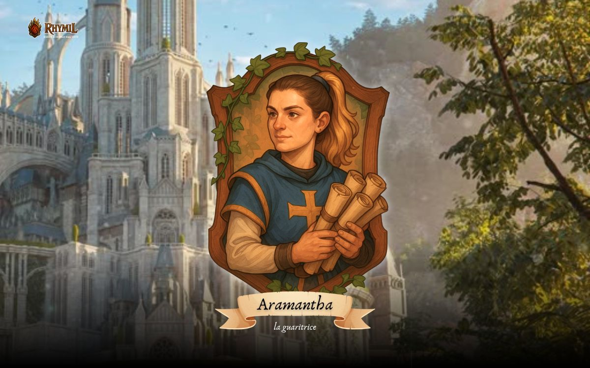
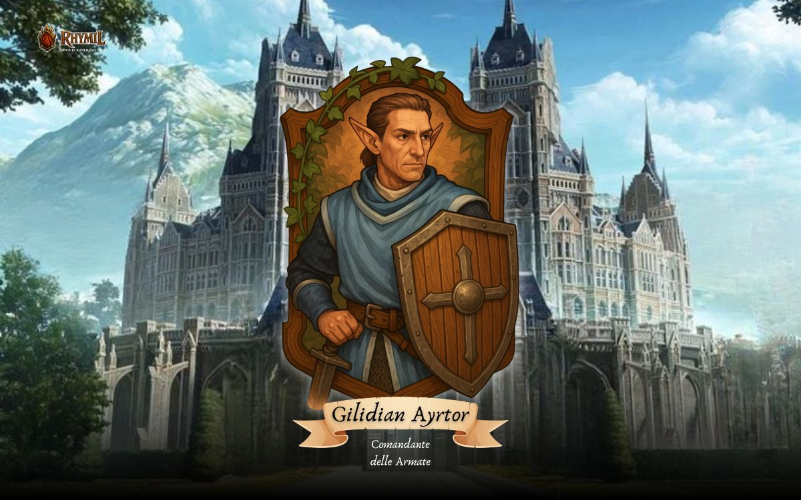
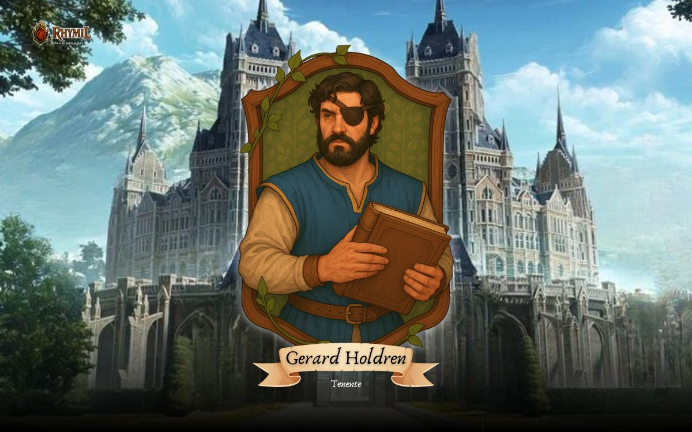
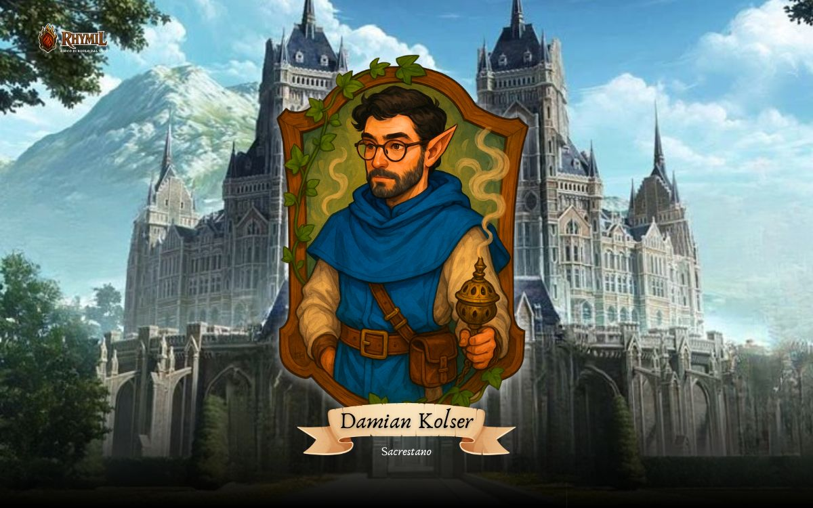

Hermes Calighe - Mattia De Zorzi
Mezz'elfo dall'orecchio sempre pronto a captare ogni nuova notizia e pettegolezzo, Hermes è un giovane paladino che non ha paura di mettersi in gioco per perseguire uno scopo più grande. Molto saldo nei suoi principi morali, dovrebbe capire che le sue convinzioni e le sue idee forse non sono sempre oggettivamente le migliori.

Ansem Towermoon - Thomas Tomè
Paladino da scrivania che si è ritrovato dentro qualcosa più grande lui. Ha un cuore grande e giusto, per questo l'immobilismo spesso imposto dalla legge lo rende irascibile e scostante. Tuttavia la sua fede non ha mai vacillato.

Boreas Bonaventura - Cora Oian
Una Paladina alle prima armi, fresca fresca di accademia, fa del suo meglio per risolvere le situazioni in modo pacifico. Nonostante abbia ancora moltissimo da imparare, il suo sogno è quello di diventare un medico da campo e di salvare vite in battaglia.

Walfinas

Aramantha

Teodor Kilkan - master Lorenzo
Primo Paladino

Gilidian Ayrtor - master Alessandro
Comandante delle Armate

Gerard Holdren - master Alberto
Tenente. Holdren è sempre stato uno stacanovista, ha sempre messo la sua vocazione prima di ogni cosa, anche della vita privata. Tanto quanto ligio e zelante è anche alla mano con una battuta pronta per sdrammatizzare, è sempre gentile e disponibile e difficilmente perde le staffe, pure nel cuore della battaglia! La sua fredda calma è sempre stato un motivo di disagio tra i suoi colleghi.

Damian Kolser
Sacrestano


{kind=link}
{kind=link}
{kind=link}
{kind=link}
{kind=link}
{kind=link}